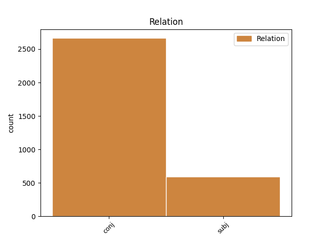
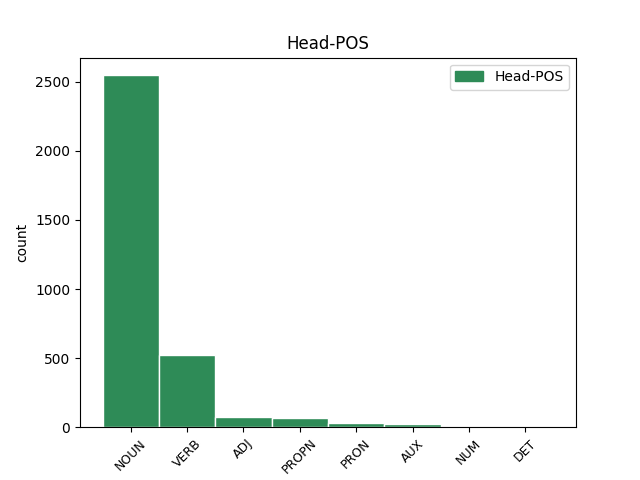
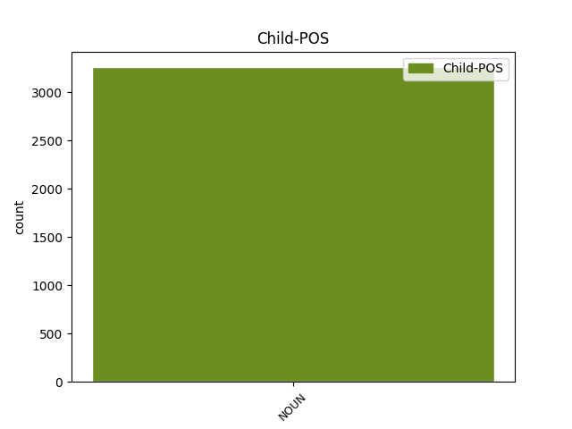

Distribution of features within this leaf



Agreement Rules sorted by frequency.
- When the dependent token is the conjunct(conj) of the head token, and the dependent token is NOUN.
1 Svarīgākie _ _ _ _ 0 _ _ _
2 tikumi _ _ _ _ 0 _ _ _
3 , _ _ _ _ 0 _ _ _
4 ko _ _ _ _ 0 _ _ _
5 senās _ _ _ _ 0 _ _ _
6 Izraēlas _ _ _ _ 0 _ _ _
7 jauniešiem _ _ _ _ 0 _ _ _
8 vajadzēja _ _ _ _ 0 _ _ _
9 izkopt _ _ _ _ 0 _ _ _
10 , _ _ _ _ 0 _ _ _
11 bija _ _ _ _ 0 _ _ _
12 čaklums _ _ _ _ 0 _ _ _
13 , _ _ _ _ 0 _ _ _
14 godīgums _ _ _ _ 0 _ _ _
15 , _ _ _ _ 0 _ _ _
16 pazemība pazemība NOUN ncfsn4 Case=Nom|Gender=Fem|Number=Sing 0 _ _ _
17 , _ _ _ _ 0 _ _ _
18 kā _ _ _ _ 0 _ _ _
19 arī _ _ _ _ 0 _ _ _
20 dievbijība dievbijība NOUN ncfsn4 Case=Nom|Gender=Fem|Number=Sing 16 conj _ LvtbNodeId=a-z99-p160s1w20
21 ( _ _ _ _ 0 _ _ _
22 pēdējais _ _ _ _ 0 _ _ _
23 tika _ _ _ _ 0 _ _ _
24 uzskatīta _ _ _ _ 0 _ _ _
25 par _ _ _ _ 0 _ _ _
26 augstāko _ _ _ _ 0 _ _ _
27 vērtību _ _ _ _ 0 _ _ _
28 ) _ _ _ _ 0 _ _ _
29 . _ _ _ _ 0 _ _ _
1 Turklāt _ _ _ _ 0 _ _ _
2 , _ _ _ _ 0 _ _ _
3 ierādāms ierādīt VERB vmnpdmsnppnpn Case=Nom|Definite=Ind|Degree=Pos|Gender=Masc|Number=Sing|Polarity=Pos|Tense=Pres|VerbForm=Part|Voice=Pass 0 _ _ _
4 darbs darbs NOUN ncmsn1 Case=Nom|Gender=Masc|Number=Sing 3 subj _ LvtbNodeId=a-z90-p175s2w4|SpaceAfter=No
5 , _ _ _ _ 0 _ _ _
6 kas _ _ _ _ 0 _ _ _
7 atbilst _ _ _ _ 0 _ _ _
8 prasmēm _ _ _ _ 0 _ _ _
9 un _ _ _ _ 0 _ _ _
10 spējām _ _ _ _ 0 _ _ _
11 . _ _ _ _ 0 _ _ _
Disagree Examples:
1 Tā _ _ _ _ 0 _ _ _
2 simbolizē _ _ _ _ 0 _ _ _
3 ierobežojumus _ _ _ _ 0 _ _ _
4 , _ _ _ _ 0 _ _ _
5 arī _ _ _ _ 0 _ _ _
6 apņēmību _ _ _ _ 0 _ _ _
7 , _ _ _ _ 0 _ _ _
8 spēju _ _ _ _ 0 _ _ _
9 loģiski _ _ _ _ 0 _ _ _
10 spriest _ _ _ _ 0 _ _ _
11 , _ _ _ _ 0 _ _ _
12 noslieci _ _ _ _ 0 _ _ _
13 uz _ _ _ _ 0 _ _ _
14 zinātni _ _ _ _ 0 _ _ _
15 , _ _ _ _ 0 _ _ _
16 medicīnu medicīna NOUN ncfsa4 Case=Acc|Gender=Fem|Number=Sing 0 _ _ _
17 , _ _ _ _ 0 _ _ _
18 izgudrojumiem izgudrojums NOUN ncmpd1 Case=Dat|Gender=Masc|Number=Plur 16 conj _ LvtbNodeId=a-c23-p13s2w18|SpaceAfter=No
19 , _ _ _ _ 0 _ _ _
20 tehniku _ _ _ _ 0 _ _ _
21 . _ _ _ _ 0 _ _ _
1 Tā _ _ _ _ 0 _ _ _
2 simbolizē _ _ _ _ 0 _ _ _
3 ierobežojumus _ _ _ _ 0 _ _ _
4 , _ _ _ _ 0 _ _ _
5 arī _ _ _ _ 0 _ _ _
6 apņēmību _ _ _ _ 0 _ _ _
7 , _ _ _ _ 0 _ _ _
8 spēju _ _ _ _ 0 _ _ _
9 loģiski _ _ _ _ 0 _ _ _
10 spriest _ _ _ _ 0 _ _ _
11 , _ _ _ _ 0 _ _ _
12 noslieci _ _ _ _ 0 _ _ _
13 uz _ _ _ _ 0 _ _ _
14 zinātni _ _ _ _ 0 _ _ _
15 , _ _ _ _ 0 _ _ _
16 medicīnu _ _ _ _ 0 _ _ _
17 , _ _ _ _ 0 _ _ _
18 izgudrojumiem izgudrojums NOUN ncmpd1 Case=Dat|Gender=Masc|Number=Plur 0 _ _ _
19 , _ _ _ _ 0 _ _ _
20 tehniku tehnika NOUN ncfsa4 Case=Acc|Gender=Fem|Number=Sing 18 conj _ LvtbNodeId=a-c23-p13s2w20|SpaceAfter=No
21 . _ _ _ _ 0 _ _ _
1 Viens _ _ _ _ 0 _ _ _
2 apsēstais _ _ _ _ 0 _ _ _
3 pasauli _ _ _ _ 0 _ _ _
4 padziļina _ _ _ _ 0 _ _ _
5 ar _ _ _ _ 0 _ _ _
6 rakstniecību _ _ _ _ 0 _ _ _
7 , _ _ _ _ 0 _ _ _
8 cits _ _ _ _ 0 _ _ _
9 apsēstais _ _ _ _ 0 _ _ _
10 ar _ _ _ _ 0 _ _ _
11 cigareti _ _ _ _ 0 _ _ _
12 grib _ _ _ _ 0 _ _ _
13 aizdedzināt _ _ _ _ 0 _ _ _
14 lidmašīnu _ _ _ _ 0 _ _ _
15 , _ _ _ _ 0 _ _ _
16 kurā _ _ _ _ 0 _ _ _
17 sēž _ _ _ _ 0 _ _ _
18 ļaudis _ _ _ _ 0 _ _ _
19 , _ _ _ _ 0 _ _ _
20 kas _ _ _ _ 0 _ _ _
21 dodas _ _ _ _ 0 _ _ _
22 uz _ _ _ _ 0 _ _ _
23 mājām māja NOUN ncfpd4 Case=Dat|Gender=Fem|Number=Plur 0 _ _ _
24 vai _ _ _ _ 0 _ _ _
25 pasaulē pasaule NOUN ncfsl5 Case=Loc|Gender=Fem|Number=Sing 23 conj _ LvtbNodeId=a-c43-p9s4w25|SpaceAfter=No
26 . _ _ _ _ 0 _ _ _
1 Viņus _ _ _ _ 0 _ _ _
2 nošķir _ _ _ _ 0 _ _ _
3 viņu _ _ _ _ 0 _ _ _
4 — _ _ _ _ 0 _ _ _
5 veco _ _ _ _ 0 _ _ _
6 ļaužu _ _ _ _ 0 _ _ _
7 — _ _ _ _ 0 _ _ _
8 dzīvei _ _ _ _ 0 _ _ _
9 , _ _ _ _ 0 _ _ _
10 kur _ _ _ _ 0 _ _ _
11 viņi _ _ _ _ 0 _ _ _
12 nonāk _ _ _ _ 0 _ _ _
13 kopēju kopējs NOUN ncmsa1 Case=Acc|Gender=Masc|Number=Sing 0 _ _ _
14 un _ _ _ _ 0 _ _ _
15 sociālo _ _ _ _ 0 _ _ _
16 darbinieku darbinieks NOUN ncmpg1 Case=Gen|Gender=Masc|Number=Plur 13 conj _ LvtbNodeId=a-c47-p9s5w16
17 uzraudzībā _ _ _ _ 0 _ _ _
18 . _ _ _ _ 0 _ _ _
1 Varas _ _ _ _ 0 _ _ _
2 izpausme _ _ _ _ 0 _ _ _
3 ir _ _ _ _ 0 _ _ _
4 saiknē _ _ _ _ 0 _ _ _
5 starp _ _ _ _ 0 _ _ _
6 indivīdiem _ _ _ _ 0 _ _ _
7 , _ _ _ _ 0 _ _ _
8 spējā _ _ _ _ 0 _ _ _
9 īstenot _ _ _ _ 0 _ _ _
10 varu _ _ _ _ 0 _ _ _
11 pār _ _ _ _ 0 _ _ _
12 citu _ _ _ _ 0 _ _ _
13 indivīdu _ _ _ _ 0 _ _ _
14 rīcību rīcība NOUN ncfsa4 Case=Acc|Gender=Fem|Number=Sing 0 _ _ _
15 , _ _ _ _ 0 _ _ _
16 domām doma NOUN ncfpd4 Case=Dat|Gender=Fem|Number=Plur 14 conj _ LvtbNodeId=a-c52-p223s2w16
17 vai _ _ _ _ 0 _ _ _
18 gribu _ _ _ _ 0 _ _ _
19 . _ _ _ _ 0 _ _ _